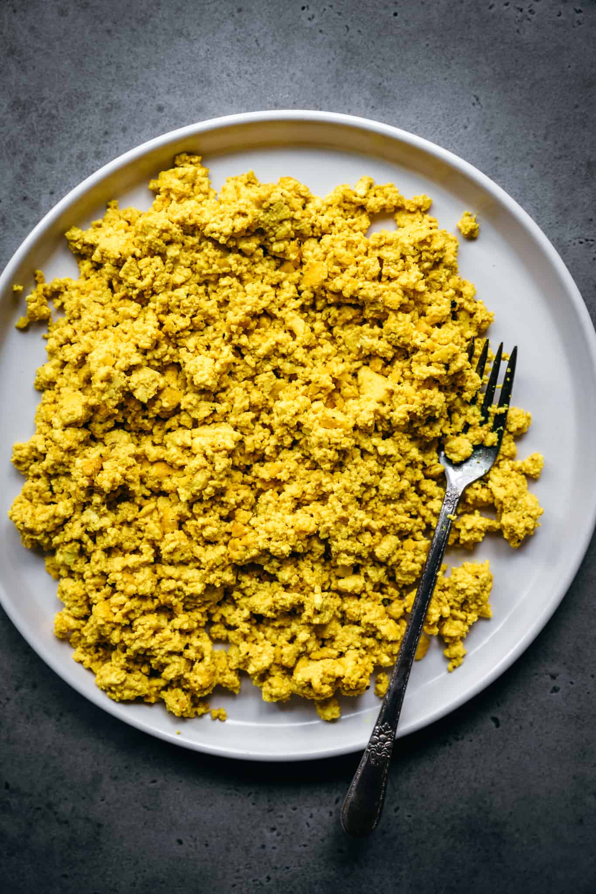

tofu scramble recipe

description
here is a paragraph or two describing the recipe
ingredients
- plant-based butter
- plant-based milk
- firm tofu
- red pepper
- turmeric
- smoked paprika
- nutritional yeast
steps
- chop 1/2 red pepper into small pieces
- add 1 tbsp butter to pan
- crumble 1/2 block of tofu by hand and add to the pan
- add chopped red pepper
- add 1/2 cup plant-based milk
- cook water out thoroughly, or to the desired level of consistency
- add 1/2 tsp turmeric, 1 tbsp smoke paprika, and 1 tbsp nutritional yeast
- mix and serve